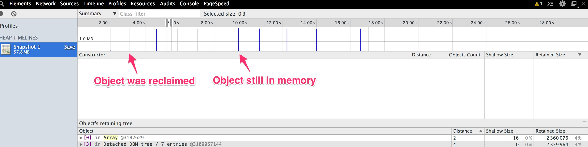

JavaScript Garbage Collector Demystified
Created by Jonathan Wood
jwood@wintellect.com / dotnetmeditations.com / @JWood
Who is this guy?

Agenda
- Why does this matter?
- General Garbage Collector details
- V8 Engine Specifics
- Dev Tools Overview
- Demo
Biggest performance problems in .NET?
- Memory
- ...memory
- ...and more memory
Why does this matter with JavaScript?
How does memory work in JavaScript?
Numbers
var num = 12;
var num2 = 2.35;
Strings
var hello = "Hello, Carolina Code Camp!";
var sub = num.substr(0, 3);
Booleans
var isTruthy = true;
isTruthy = false; // Oh, noes!
What happens during a GC in JavaScript?
JavaScript Object Graph

Before a GC

After a GC

V8 Engine Specifics


Old Generation
How do I know I have memory issues?
- Users
- Crashes
- Collecting data
How to collect memory data?

- jsHeapSizeLimit - Memory the JavaScript heap is limited to
- usedJSHeapSize - Memory currently being used
- totalJSHeapSize - Memory that has been allocated on the JavaScript heap (includes free space)
Timeline
Heap profiler


- How much memory is the page using?
- Is the page GCing too frequently?